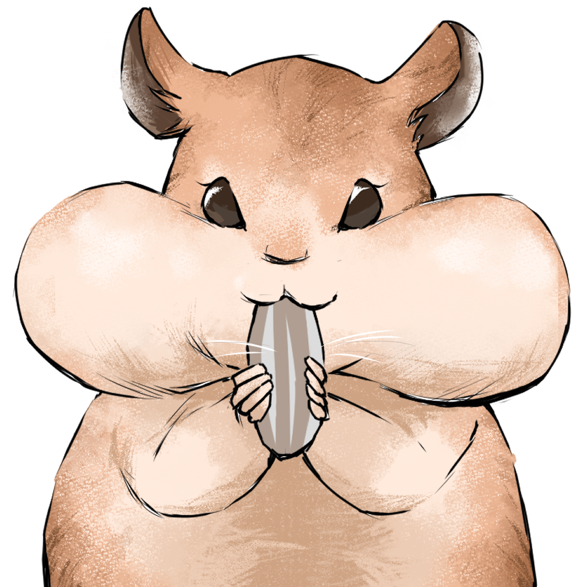

Hi I'm Yuka
As a Developer, as a Creater
A Frontend development student at Nackademin. Love creating, well organised and tenacious.
Previous experience in web marketing, international logistics, customer service and store management. Originally from Tokyo and moved to Stockholm in 2016. After completing all the Swedish courses, I worked in E-commerce marketing for the Japanese market.
Alongside studying Swedish from 2017 to 2020, I made comics about my life in Sweden on Instagram, targeting the Japanese audience. This project @yukainsweden reached around 20,000 followers at its peak.
Frontend development and comic creation are very similar to me. Both involve visualising ideas by considering the perspectives of users or readers. Both require concentration and patience, and it brings great joy of creating. Skaparglädje is my key word, and I aspire to make such work my livelihood.
Abilities
History
-
2023-
Front-end Development Student
Nackademin
Stockholm, Sweden
JavaScript, HTML, CSS(SASS), Git, Accessibility, Figma, Agile, CMS.
-
2019-2022
Marketing Associate / Japanese Market
Triwa
Stockholm, Sweden
Marketing for the Japanese market.
Influencer marketing, social media communication, copy writing for digital ads and newsletter communication for subscribers. Content localization, product translation and updating e-commerce website. Inventory control and customer service in Japanese. -
2018 - 2019-
Student
Stockholm University
Stockholm, Sweden
Svenska som främmande språk
-
2017-
Banquet Server
Stadshusrestauranger
Stockholm, Sweden
Serving the Nobel banquet 2018, 2019 and 2022.
-
2016
Move to Stockholm
-
2015- 2016
Export Officer
Kintetsu World Express
Stockholm, Sweden
Receiving shipping orders from clients and arrange the shipments.
-
2013- 2015
Assistant Store Manager
UNIQLO
Tokyo, Japan
Managing UNIQLO apparel stores in Tokyo after the 6 month UMC (Uniqlo Management Candidate) program.
-
2008- 2013
Student
Rikkyo University
Tokyo, Japan
Bachelor of Arts - BA, Contemporary Psychology
-
1989
Born in Tokyo
Projects
As a Developer
Ankademin Quiz Farm
A school project. Made by JavaScript, HTML/CSS, and all the images are drawn by myself using ClipStudio. Answer the Quiz and find baby ducks!
TaskOptima
As a Creator
Yuka in Sweden
Yasuragi Kids
illustrations